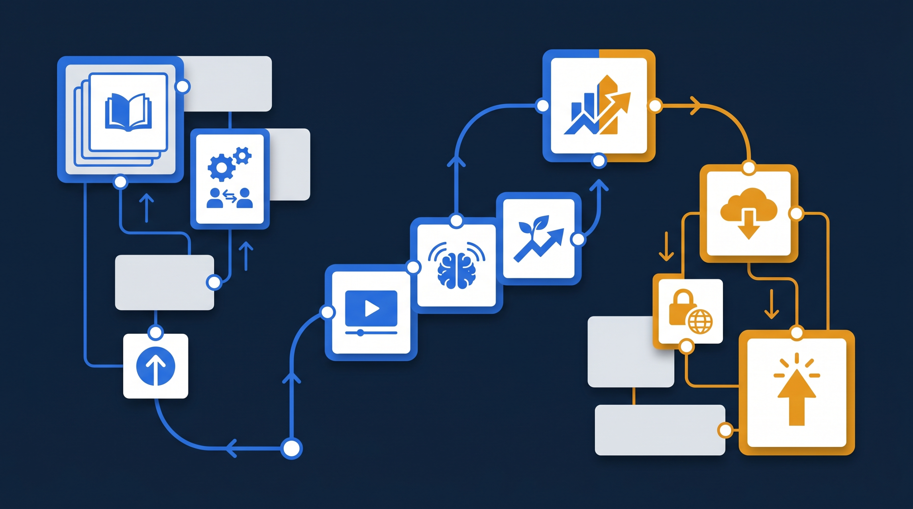
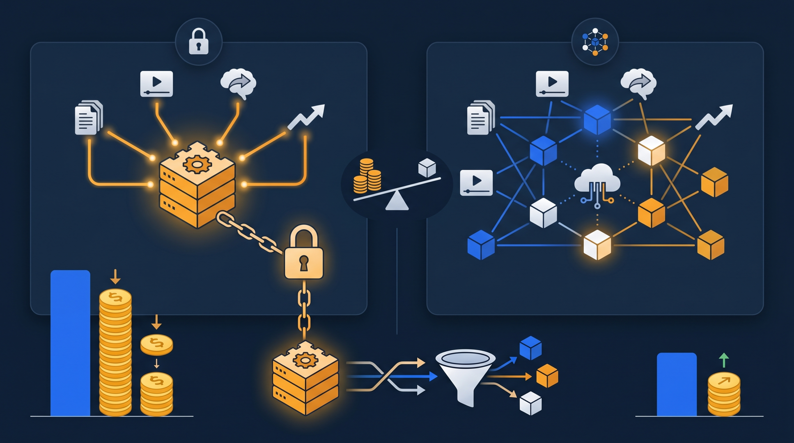
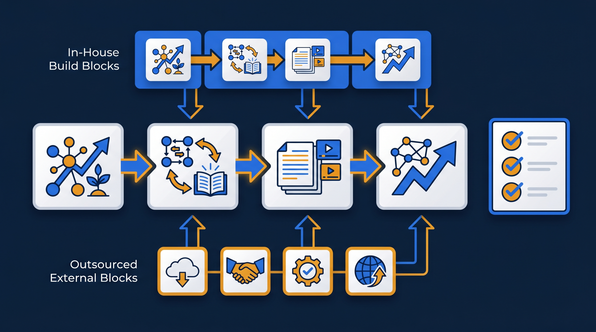

「外部の研修会社に頼むと費用がかさむ」「でも自社で作るとなると、何から手をつければいいか分からない」——研修を社内で作る「内製化」は、コストと自社らしさの両面で関心を集めています。この記事では、社内研修の内製化のメリットとデメリットを、外部委託との比較で整理し、どこを自社で作り、どこを外に頼むべきかの判断軸を、現場目線で解説します。

社内研修の内製化とは？まず言葉を整理する
社内研修の内製化とは、研修の企画から教材づくり、講師、運用までを、外部の研修会社に頼らず、自社の社員で行うことを指します。「内製」という言葉は、外から買うのではなく自分たちで作る、という意味で使われます。
ここで押さえておきたいのが、内製化は「全部か、ゼロか」ではない、ということです。研修には、企画・教材作成・講師・運用といったいくつかの工程があります。このすべてを自社でやる完全内製もあれば、教材だけ自作して講師は外部に頼む、運用は自社で回すといった、一部だけの内製もあります。
つまり、内製化を考えるときは「どの工程を自社で持つか」を分けて考えるのが現実的なんですよね。いきなり全工程を抱え込もうとすると負担が大きく、続かなくなることが多いものです。
これと対になるのが外部委託です。研修会社に依頼して、プログラムの設計から講師の派遣までを任せる形ですね。ほかにも、社外で開かれている公開講座に社員を参加させる方法もあります。これらは、自社で作る手間がかからない代わりに、1回ごとに費用が発生します。
厚生労働省の能力開発基本調査でも、企業の教育訓練は、自社で実施するものと外部に委託するものの両方が使われていることが示されています。内製と外注は、どちらかを選ぶものではなく、組み合わせて使うものだと考えると整理しやすくなります。
社内研修を内製化するメリット
では、研修を内製化すると、どんな良いことがあるのでしょうか。現場でよく挙がるメリットを整理します。
1. 自社の業務にぴったり合った研修ができる
外部の研修は、どうしても一般論が中心になりがちです。「ビジネスマナー」「報告・連絡・相談」といった汎用的な内容は学べますが、自社の商品知識や、独自の業務の進め方、社内ルールまでは教えてくれません。内製なら、自社の現場で本当に必要なことを、そのまま教材にできます。新人が入った初日から、自社の仕事に直結した内容を学べるわけです。
2. 繰り返すほどコストを抑えられる
外部委託は、研修を開くたびに費用がかかります。これに対して内製した教材、特に動画にしたものは、一度作れば何度でも使えます。新人が毎年入る研修や、全社員が定期的に受ける研修のように、頻度や対象人数が多いものほど、内製化による費用面の効果は大きくなる傾向があります。
3. ノウハウが社内に蓄積される
外部に研修を任せると、その内容や教え方のノウハウは、研修会社側に残ります。自社には何も積み上がりません。一方、内製すれば、教材も教え方の工夫も、すべて社内の資産になります。一度作った研修は来年も使え、改善するほど良くなっていく。教育のノウハウが会社の中に溜まっていくわけです。
- 自社の業務・商品・文化に合わせた研修ができる
- 繰り返し使う研修ほど、1回あたりのコストを抑えやすい
- 教材・ノウハウが社内に蓄積され、組織の資産になる
- 内容を自社のタイミングで、すぐに更新できる
- ベテランの知識やコツを、教材として社内に残せる
ある製造業の会社では、新人向けの安全教育を毎年外部講師に依頼していましたが、内容が一般的すぎて、自社の機械の注意点までは触れられていませんでした。そこで、現場のベテランが実際の作業をしながら注意点を説明する様子を動画にしたところ、自社の設備に即した、より実践的な教育ができるようになったといいます。これは内製化ならではの強みが出た例です。
社内研修を内製化するデメリット
良いことばかりではありません。内製化には、相応の負担や注意点もあります。ここを理解せずに始めると、途中で頓挫しやすいので、正直に整理しておきます。
1. 作る手間と時間がかかる
当然ですが、研修を自社で作るには、企画し、教材を用意し、教える、という作業が発生します。これらは通常業務の合間に行うことが多く、担当者の負担になります。「内製化したものの、忙しくて教材が作れないまま止まってしまった」という話は、よく聞きます。最初の立ち上げに、ある程度のエネルギーが必要だという点は、覚悟しておく必要があります。
2. 専門性の高い分野は対応が難しい
法律や会計、特定の資格、最新の専門技術など、社内に詳しい人がいない分野は、内製には向きません。無理に自社で作ろうとすると、内容が不正確になったり、古い情報のままになったりする心配があります。こうした分野は、外部の専門家に任せたほうが、結果的に質も効率も高くなることが多いです。
3. 属人化すると、かえってもろくなる
内製化を進めるとき、特定の社員だけが教材を作り、その人だけが教えている状態になると、新たな属人化が生まれます。その人が辞めたら研修が止まる、という事態になりかねません。内製化と同時に、教える内容・順番・基準を文書や動画で固め、担当者が変わっても回る状態にしておくことが大切です。

内製化と外部委託の比較：どこを自社で持つか
メリットとデメリットを踏まえると、「全部を内製化する」のも「全部を外注する」のも、極端だと分かります。大事なのは、研修ごとに向き不向きを見極めて、組み合わせることです。比較してみましょう。
| 観点 | 内製化が向く研修 | 外部委託が向く研修 |
|---|---|---|
| 内容 | 自社固有の業務・商品知識・社内ルール | 法律・資格・最新の専門知識 |
| 頻度 | 繰り返し発生する（新人研修など） | 単発・低頻度 |
| 対象人数 | 多い | 少数の専門職 |
| 求められる更新 | 自社の都合で随時直したい | 専門家による最新情報が必要 |
| ノウハウ | 社内に残したい | 自社で持つ必要がない |
この表を眺めると、判断軸が見えてきます。「自社にしか分からないこと」「何度も繰り返すこと」は内製に、「外の専門知識が必要なこと」「めったにやらないこと」は外注に、という切り分けですね。
たとえば、ある士業事務所では、事務所独自の業務フローや顧客対応の進め方は内製で動画化し、最新の法改正に関する研修だけは外部のセミナーを活用していました。自社の核となる部分は内製で蓄積しつつ、専門性が必要な部分は外に頼る。この組み合わせが、無理なく続く形だったといいます。
ところで、内製と外注の境目は、固定したものではありません。最初は外部に頼っていた研修も、何度か受けるうちに自社で教えられるようになり、内製に切り替えられることがあります。逆に、内製していた分野で法改正が頻繁になり、外注に戻すこともある。自社の状況に応じて見直していくものだと考えておくとよいでしょう。
ここで一つ、賢い使い方を紹介します。外部の研修を受けた際に、その内容を許可を得たうえで記録し、自社向けに整理し直して内製教材の土台にする、という方法です。外部の専門知識を、社内の文脈に合わせて翻訳していくわけですね。最初は外注で学び、そこで得た知見を自社の教材として残していけば、外注のたびに払う費用を、少しずつ社内の資産に変えていけます。外注と内製は、対立するものではなく、つなげて使えるものだと考えると、選択肢が広がります。
また、内製化を進めると、教材を作る社員自身の理解も深まる、という副次的な効果があります。人に教えるために内容を整理する過程で、「なぜこの手順なのか」を改めて考えることになり、本人の業務理解も磨かれます。内製化は、教わる側だけでなく、教える側の成長にもつながる取り組みなのです。
内製化を無理なく始める進め方
「内製化したいけれど、何から始めればいいか分からない」という方のために、無理なく始める手順を整理します。一気に全部をやろうとせず、小さく始めるのがコツです。
まず、繰り返し発生していて、自社固有の内容の研修を1つ選びます。新人が毎回受ける基礎研修や、頻繁に説明している作業手順などが候補になります。範囲を絞ると、関わる人も少なく、短期間で結果が見えるので、社内の納得も得やすくなります。
次に、その内容に詳しいベテランの作業や説明を、スマートフォンで撮影します。きれいな編集は後回しで構いません。本人が無意識にやっている確認や声かけほど、教材として価値があります。撮りながら「なぜそうするのか」を聞いていくと、言葉になっていなかったコツが引き出せます。
そして、撮った素材を新人が見て分かる形に整え、確認テストとセットにします。見て終わりにせず、理解できているかを測り、つまずいた箇所の説明を足していく。作って、使って、直すを繰り返すと、教材は使うほど良くなっていきます。

最後に、できた教材を1か所に集約することが重要です。各自のパソコンやチャットに散らばると、結局どこにあるか分からなくなり、また属人化に戻ってしまいます。動画・マニュアル・確認テストを学習管理システム（LMS）に置き、誰がどこまで学んだかを記録できる状態にすると、内製した研修を組織の資産として運用しやすくなります。
内製化とコスト・助成金の関係
内製化を検討するとき、費用面が気になる方は多いでしょう。ここで、コストの考え方を整理しておきます。
内製化は、最初に教材を作る手間という「初期コスト」がかかります。担当者の時間や、撮影・編集の労力ですね。けれど、その後は同じ教材を繰り返し使えるため、研修を開くたびにかかる費用は抑えられます。外部委託が「使うたびに払う」のに対し、内製は「最初に作って、あとは使い回す」という構造の違いがあるわけです。
J-Net21などの中小企業向け情報でも、人材育成は経営課題として繰り返し取り上げられています。人手も予算も限られる中小企業ほど、繰り返し使える教材を社内に持つことは、長い目で見て効いてくるはずです。
なお、研修の内製化やeラーニングの整備には、人材開発支援助成金のように、訓練にかかった経費や賃金の一部を国が助成する制度を活用できる場合があります。自社で計画した訓練でも、要件を満たせば対象となることがあります。ただし、制度の対象や条件は変わることがあるため、活用を検討する際は、厚生労働省の公式情報や労働局の窓口で最新の要件を確認することをおすすめします。
まとめ：内製と外注を、賢く組み合わせる
社内研修の内製化は、自社に合った研修を作れて、コストを抑えられ、ノウハウが社内に蓄積されるという大きなメリットがあります。一方で、作る手間がかかり、専門分野には向かず、属人化に注意が必要だという面もあります。
だからこそ、すべてを内製化しようとするのではなく、研修ごとに向き不向きを見極めることが大切です。自社固有で繰り返す内容は内製に、専門性が高く頻度の低い内容は外注に。この使い分けが、無理なく続く形になります。
始めるときは、繰り返し発生している自社固有の研修を1つ選び、ベテランの作業を撮って、教材化し、確認テストまでつなげる。そして、できた教材を学習管理システムに集約し、組織の資産として運用していく。この流れができると、研修は外注頼みから、自社で回せる仕組みへと変わっていきます。
内製化は、一度に完成させるものではなく、少しずつ積み上げていくものです。最初の1本ができれば、次はもう少し楽に作れます。教材が増えるほど、自社で教えられる範囲が広がり、外注に頼る部分は本当に必要なところだけに絞られていく。こうして、自社にとっての内製と外注の最適な配分が、運用しながら見えてくるはずです。まずは、自社で「毎回、外に頼んでいる研修」と「毎回、社内で同じことを教えている研修」を書き出すところから、内製化の検討を始めてみてください。
よくある質問
研修の企画・教材作成・講師・運用までを、外部の研修会社に頼らず自社の社員で行うことを指します。すべてを内製する場合もあれば、教材だけ自作して講師は外部に頼むなど、一部だけ内製する形もあります。自社の業務や文化に合った研修を作りやすいのが特徴です。
一概には言えません。外部委託は1回ごとに費用がかかるため、頻度や対象人数が多い研修ほど内製化のほうが割安になる傾向があります。一方、専門性が高く頻度の低い研修は、自社で作る手間を考えると外部委託のほうが効率的なことが多いです。研修ごとに判断するのが現実的です。
最初から専任の研修担当者を置く必要はありません。各業務に詳しいベテランの作業を動画に撮り、聞き取りながら教材化していく方法なら、特別な講師がいなくても始められます。動画にしておけば、その人が毎回教える必要もなくなります。
すべてを内製化する必要はありません。自社固有の業務・商品知識・社内ルールは内製に向き、法律や専門資格、最新の専門知識など外部の知見が必要な分野は外部委託が向いています。内製と外注を組み合わせ、自社に合う配分を見つけることをおすすめします。
属人化を防ぐことが品質維持の鍵になります。教える内容・順番・修了基準を文書や動画で固め、担当者が変わっても同じ水準で教えられる状態にしておくと、品質が安定しやすくなります。確認テストで理解度を測り、つまずく箇所を改善していく運用も有効です。
自社で計画した訓練であっても、要件を満たせば人材開発支援助成金などの対象となる場合があります。ただし制度の対象や条件は変わることがあるため、活用を検討する際は、厚生労働省の公式情報や労働局の窓口で最新の要件を確認することをおすすめします。